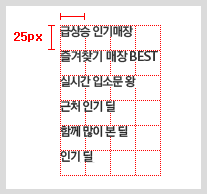
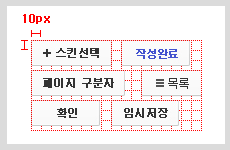

CSS
CSS(Cascading Style Sheets)은 MTML을 꾸며주는 스타일 시트 입니다. 즉 웹 페이지를 꾸미고 디자인을 작업을 도와주는 언어입니다.
선언 방법 및 주석
/* 선택자{ 속성:값; } */
div { color:red; }
내장 선언
<style></style> 태그로 스타일을 작성하는 방식
<style>
div {color:red;}
</style>
인라인 선언
요소의 style 속성에 직접 스타일을 작성하는 방식
<div style="color: red;">안뇽</div>
@import 방식
CSS의 @import 규칙으로 CSS 문서 안에서 또 다른 CSS 문서를 가져와 연결하는 방식
@import url("경로");
선택자 우선순위
우선순위란, 같은 요소가 여러 선언의 대상이 된 경우 어떤 선언의 CSS속성을 우선 적용할지 결정하는 방법
선택자 적용 순서
| 우선순위 | 예시 | 설명 | 점수 |
|---|---|---|---|
| 1 | !impottant; |
css 값 뒤에 선언 | 99999 |
| 2 | style=”color:red” |
인라인 선언 | 1000 |
| 3 | #id |
ID 선택자 | 100 |
| 4 | .class |
Class 선택자 | 10 |
| 5 | tag |
태그 선택자 | 1 |
| 6 | * |
전체 선택자 | 0 |
| 7 | body |
상속 안됨 | - |
기본 선택자
| 종류 | 예시 | 설명 |
|---|---|---|
| 전체 선택자 | * |
전체 를 선택합니다. |
| 태그 선택자 | li |
기본 태그를 선택합니다. |
| 클래스 선택자 | .class |
클래스 태그를 선택합니다. |
| 아이디 선택자 | #id |
아이디 태그를 선택합니다. |
복합 선택자
| 종류 | 예시 | 설명 |
|---|---|---|
| 그룹 선택자 | #id, .class, li |
여러가지 태그를 선택합니다. |
| 일치 선택자 | li.class |
태그 이름과 클래스 이름이 동시에 만족하는 요소를 선택합니다. |
| 자식 선택자 | li > .class |
자식(하위) 태그만 선택합니다.(자손은 포함안됨). |
| 하위(후손) 선택자 | li .class |
하위(후손) 선택자 |
| 인접 형제 선택자 | .class + li |
자식 태그 다음 형제 태그 하나만 선택합니다. |
| 일반 형제 선택자 | .class ~ li |
자식 태그 다음 모든 형제 태그를 선택합니다. |
속성 선택자
| 종류 | 예시 | 설명 |
|---|---|---|
| ATTR | [type] |
속성 type을 포함한 요소 선택 |
| ATTR=VALUE | [type="password"] |
속성 type을 포함하고 값이 password인 요소 선택 |
가상 클래스 선택자
| 종류 | 예시 | 설명 |
|---|---|---|
| HOVER | :hover |
마우스 커서가 올라가 있는 동안 선택. |
| ACTIVE | :active |
마우스 커서가 클릭하고 있는 동안 선택. |
| FOCUS | :focus |
사용자가 정보를 입력하는 태그<input>에 주로 사용됨 |
| FIRST CHILD | :first-child |
선택자 형제 요소중 첫째를 선택. |
| LAST CHILD | :last-child |
선택자 형제 요소중 막내를 선택. |
| NTH CHILD | :nth-child(n) |
선택자 형제 요소중 (n)째를 선택. |
:nth-child(2n+1) |
홀수 번째 요소 선택 | |
| NOT | :not(selector) |
selector를 제외한 요소를 모두 선택. |
가상 요소 선택자
| 종류 | 예시 | 설명 |
|---|---|---|
| BEFORE | ::before |
선택자 요소 내부 앞에 내용을 삽입 (인라인 요소) |
| AFTER | ::after |
선택자 요소 내부 뒤에 내용을 삽입 (인라인 요소) |
CSS 속성
- 인라인 요소 : 포함한 콘텐츠 크기만큼 자동으로 줄어듬
- 블럭 요소 : 부모 요소의 크기만큼 자동으로 늘어남
CSS 단위
- px : 픽셀
- % : 상대적 백분율
- em : 요소의 글꼴 크기
- rem : 루트 요소(html)의 글꼴 크기
- vw : 뷰포트 가로 너비의 백분율
- vh : 뷰포트 세로 너비의 백분율
너비(width, height)
| Attribute | 설명 |
|---|---|
| width | 가로 길이 설정, 바깥쪽부터 기준 |
| height | 세로 길이 설정, 높이값, 안쪽 컨텐츠에 의해 정해짐 |
| max-whidth | 요소가 커질수 있는 최대 가로 너비 |
| max-height | 요소가 커질수 있는 최대 세로 너비 |
| min-whidth | 요소가 커질수 있는 최소 가로 너비 |
| min-height | 요소가 커질수 있는 최소 세로 너비 |
외부 여백(margin)
- 음수를 사용 가능
- auto 사용시 가운데 정렬 가능
| Attribute | 설명 |
|---|---|
| margin | 요소의 바깥쪽 여백을 설정합니다 |
| margin-top | 요소의 바깥쪽 위쪽 여백을 설정합니다 |
| margin-right | 요소의 바깥쪽 오른쪽 여백을 설정합니다 |
| margin-bottom | 요소의 바깥쪽 아래쪽 여백을 설정합니다 |
| margin-left | 요소의 바깥쪽 왼쪽 여백을 설정합니다 |
/* 자동값, 기본값 */
margin : auto;
/* 위쪽/왼쪽/오른쪽/아래쪽 */
margin : 10px;
/* 위쪽/아래, 왼쪽/오른쪽 */
margin : 10px 11px;
/* 위쪽, 왼쪽/오른쪽, 아래쪽 */
margin : 10px 11px 12px;
/* 위쪽, 오른쪽 아래쪽 왼쪽 */
margin : 10px 11px 12px 13p;
/* 블록구조를 가운데 정렬할 때 사용함 */
margin : 0 auto;
내부 여백(padding)
| Attribute | 설명 |
|---|---|
| padding | 해당 요소의 내부 여백을 한꺼번에 지정합니다 |
| padding-top | 해당 요소의 내부 상단 여백을 지정합니다 |
| padding-right | 해당 요소의 내부 오른쪽 여백을 지정합니다 |
| padding-bottom | 해당 요소의 내부 하단 여백을 지정합니다 |
| padding-left | 해당 요소의 내부 왼쪽 여백을 지정합니다 |
/* 위쪽/왼쪽/오른쪽/아래쪽 */
padding : 10px;
/* 위쪽/아래, 왼쪽/오른쪽 */
padding : 10px 11px;
/* 위쪽, 왼쪽/오른쪽, 아래쪽 */
padding : 10px 11px 12px;
/* 위쪽, 오른쪽 아래쪽 왼쪽 */
padding : 10px 11px 12px 13p;
테두리 선(border)
| Attribute | 설명 |
|---|---|
| border | 요소의 테두리 선을 지정하는 단축 속성 |
| border-top | 요소의 테두리 상단 선을 지정 |
| border-right | 요소의 테두리 오른쪽 선을 지정 |
| border-bottom | 요소의 테두리 하단 선을 지정 |
| border-left | 요소의 테두리 왼쪽 선을 지정 |
| border-width | 요소의 테두리 선의 두께 |
| border-top-width | 요소의 테두리 선의 두께 |
| border-right-width | 요소의 테두리 선의 두께 |
| border-bottom-width | 요소의 테두리 선의 두께 |
| border-right-width | 요소의 테두리 선의 두께 |
| border-style | 지정된 요소의 테두리 스타일을 지정 |
| border-top-style | 지정된 요소의 상단 부분의 테두리 스타일을 지정 |
| border-right-style | 지정된 요소의 오른쪽 부분의 테두리 스타일을 지정 |
| border-bottom-style | 지정된 요소의 하단 부분의 테두리 스타일을 지정 |
| border-left-style | 지정된 요소의 왼쪽 부분의 테두리 스타일을 지정 |
| border-color | 요소의 테두리 색상을 지정 |
| border-top-color | 지정된 요소의 상단 부분의 테두리 색상을 지정 |
| border-right-color | 지정된 요소의 오른쪽 부분의 테두리 색상을 지정 |
| border-bottom-color | 지정된 요소의 하단 부분의 테두리 색상을 지정 |
| border-left-color | 지정된 요소의 왼쪽 부분의 테두리 색상을 지정 |
/* border 작성방법 */
/* border: 선-두께 선-종류 선-색상 */
/* border: border-width border-style border-color */
border: 4px solid #ccc;
/* border-width 의 작성 방법 */
border-width: 1px;
border-width: 1px 2px;
border-width: 1px 2px 3px;
border-width: 1px 2px 3px 4px;
/* 자주쓰는 border-style */
border-style: none;
border-style: solid;
border-style: dashed;
border-style: dotted;
/* border-color 의 작성 방법 */
border-color: red;
border-color: red #ccc;
border-color: red #ccc #123;
border-color: red blue orange yellow;
다양한 border-style 속성
- border-style: none;
- border-style: hidden;
- border-style: solid;
- border-style: dashed;
- border-style: dotted;
- border-style: double;
- border-style: groove;
- border-style: ridge;
- border-style: inset;
- border-style: outset;
- border-style: dashed double dotted inset;
모서리 둥글게(border-radius)
| Attribute | 설명 |
|---|---|
| border-radius | 요소의 모서리를 둥글게 깍음 |
radius01
radius02
radius03
radius04
radius05
radius06
radius07
radius08
radius09
radius10
radius11
radius12
radius13
radius14
radius15
box-shadow
| Property | 설명 |
|---|---|
| h-shadow | 그림자의 수평(X)축 거리를 나타냅니다. |
| v-shadow | 그림자의 수평(Y)축 거리를 나타냅니다. |
| blur | 그림자의 흐림정도를 나타냅니다. |
| spread | 그림자의 거리를 나타냅니다. |
| color | 그림자의 색을 나타냅니다. |
| inset | 그림자의 요소 내부를 나타냅니다. |
shadow01
shadow02
shadow03
shadow04
shadow05
shadow06
shadow07
크기 계산(box-sizing)
요소의 크기 계산 기준을 지정
content-box: 요소의 내용(content)으로 크기 계산 (기본값)border-box: 요소의 내용 + padding + border로 크기 계산
넘침 제어(overflow)
요소의 크기 이상으로 내용이 넘쳤을 떄, 보여짐을 제어하는 단축 속성
visible: 넘친 내용을 그대로 보여줌 (기본값)hidden: 넘친 내용을 잘라냄scroll: 넘친 내용을 잘라냄, 스크롤바 생성auto: 넘친 내용이 있는 경우에만 잘라내고 스크롤바 생성

출력 특성(display)
요소의 화면 출력(보여짐) 특성
block: 상자 요소inline: 글자 요소inline-block: 글자 + 상자 요소flex: 플렉스 박스 (1차원 레이아웃)grid: 그리드(2차원 레이아웃)none: 보여짐 특성 없음, 화면에서 사라짐
투명도(opacity)
요소의 투명도 지정
value: 0~1 / 0.5(50%)
글꼴
| Attribute | 설명 |
|---|---|
| font-style | 글자의 기울기 |
| font-weight | 글자의 두께 |
| font-size | 글자의 크기 |
| font-family | 글꼴(서체) 지정 |
font-style
normal: 기울기 없음italic: 이텔릭체oblique: 기울어진 글자
font-weight
normal, 400: 기본 두께blod, 700: 두껍게100 ~ 900: 100단위의 숫자 9개
문자
| Attribute | 설명 |
|---|---|
| color | 글자의 색상 |
| text-align | 글자의 정렬 방식 |
| text-decoration | 문자의 장식(선) |
| text-indent | 문자의 첫 줄의 들여쓰기 |
text-align
left: 왼쪽 정렬right: 오른쪽 정렬center: 가운데 정렬
text-decoration
none: 장식 없음underline: 밑줄line-through: 중앙 선
배경
| Attribute | 설명 |
|---|---|
| background | 배경 단축형 |
| background-color | 요소의 배경 색상 |
| background-image | 요소의 배경 이미지 삽입 |
| background-repeat | 요소의 배경 이미지 반복 |
| background-position | 요소의 배경 이미지 위치 |
| background-size | 요소의 배경 이미지 크기 |
| background-attachment | 요소의 배경 이미지 스크롤 특성 |
background-repeat
repeat: 이미지를 수직, 수평 반복repeat-x: 이미지를 수평 반복repeat-y: 이미지를 수직 반복no-repeat: 반복 없음
background-size
auto: 이미지의 실제 크기cover: 비율을 유지, 요소의 더 넓은 너비에 맞춤contain: 비율을 유지, 요소의 더 짧은 너비에 맞춤
background-attachment
scroll: 이미지가 요소를 따라서 같이 스크롤fixed: 이미지가 뷰포트에 고정, 스크롤 Xlocal: 요소 내 스크롤 시 이미지가 같이 스크롤
이미지 스프라이트
- 이미지 스프라이트는 단일 이미지에 들어있는 이미지 모음입니다.
- 이미지 스프라이트를 사용하면 서버에 요청 수를 줄이고 대역폭도 절약할 수 있습니다.
- 여러개의 이미지를 따로 두고 코딩하는게 아니라 하나의 png 파일에 모아서 코딩하는 방식입니다.
background-position을 이용해서 배경의 위치를 조절해 주는 방법입니다.


Background Gradient
| Property | 설명 | sample |
|---|---|---|
| linear-gradient | 선형 그라데이션 백그라운을 설정합니다. | background: linear-gradient(); |
| radial-gradient | 원형 그라데이션 백그라운을 설정합니다. | background: radial-gradient(); |
gradient01
gradient02
gradient02
gradient04
gradient05
gradient05
배치
| Attribute | 설명 |
|---|---|
| position | 요소의 위치 지정 기준 |
| top, bottom, left, right | 요소의 각 방향별 거리 지정 |
| z-index | 요소의 쌓임 순서를 지정 |
position
static: 기준 없음relative: 요소 자신을 기준absolute: 위치 상 부모 요소를 기준fixed: 뷰포트(브라우저)를 기준sticky: 스크롤 영역 기준
flex - container
| Attribute | 설명 |
|---|---|
| display | Flex Container의 화면 출력(보여짐) 특성 |
| flex-direction | 주 축을 설정 |
| flex-wrap | Flex items 묶음(줄 바꿈) 여부 |
| flex-content | 주 축의 정렬 방법 (수평) |
| align-content | 교차 축의 여러 줄 정렬 방법 (수직) |
| align-items | 교차 축의 한 줄 정렬 방법 (수직) |
display
flex: 블럭 요소와 같이 Flex Container 정의 (가로 넓이 최대)inline-flex: 인라인 요소와 같이 Flex Container 정의 (가로 넓이 최소)
flex-direction
row: 수평 (좌 > 우)row-reverse: 수평 (우 > 좌)column: 수직 (위 > 아래)column-reverse: 수직 (아래 > 위)
flex-wrap
nowrap: 묶음(줄 바꿈) 없음wrap: 여러 줄로 묶음wrap-reverse: wrap의 반대 방향으로 묶음
flex-content
flex-start: Flex Items를 시작점으로 정렬flex-end: Flex Items를 끝점으로 정렬center: Flex Items를 가운데 정렬space-between: 각 Flex Item 사이를 균등하게 정렬space-around: 각 Flex Item의 외부 여백을 균등하게 정렬
align-content
stretch: Flex Items를 시작점으로 정렬flex-start: Flex Items를 시작점으로 정렬flex-end: Flex Items를 끝점으로 정렬center: Flex Items를 가운데 정렬space-between: 각 Flex Item 사이를 균등하게 정렬space-around: 각 Flex Item의 외부 여백을 균등하게 정렬
align-items
stretch: Flex Items를 시작점으로 정렬flex-start: Flex Items를 시작점으로 정렬flex-end: Flex Items를 끝점으로 정렬center: Flex Items를 가운데 정렬
flex - item
| Attribute | 설명 |
|---|---|
| order | Flex Item의 순서 (작은 숫자가 우선순위) |
| flex-grow | Flex Item의 증가 너비 비율 |
| flex-shrink | Flex Item의 감소 너비 비율 |
| flex-basis | Flex Item의 공간 배분 전 기본 너비 |
flex-grow
0: 증가 비율 없음숫자: 증가 비율
flex-shrink
1: Flex Container 너비에 따라 감소 비율 적용숫자: 감소 비율
전환
| Attribute | 설명 |
|---|---|
| transtion | 요소의 전환(시작과 끝) 효과를 지정하는 단축 속성 |
| transtion-property | 전환 효과를 사용할 속성 이름을 지정 |
| transtion-duration | 전환 효과의 지속시간을 지정 (단위는 초s단위) |
| transtion-timing-funtion | 전환 효과의 타이밍(Easing) 함수를 지정 |
| transtion-delay | 전환 효과가 몇 초 뒤에 시작할지 대기시간을 지정 (단위는 초s단위) |
transtion
/* transition 작성방법*/
/* 단축형으로 작성할때 반드시 지속시간은 필수 작성해야함! */
transition: 속성명 지속시간 타이밍함수 대기시간;
transition: property decoration timing-function delay;
transtion-timing-funtion
transform
요소의 변환 효과
| Property | 설명 | sample |
|---|---|---|
| translate | 선택한 요소의 X좌표, Y좌표 이동을 나타냅니다. | transform:translate(10px, 20px); |
| translate3d | 선택한 요소의 X좌표, Y좌표, Z좌표 이동을 나타냅니다. | transform:translate3d(10px, 20px, 30px); |
| translateX | 선택한 요소의 X좌표 이동을 나타냅니다. | transform:translateX(10px); |
| translateY | 선택한 요소의 Y좌표 이동을 나타냅니다. | transform:translateY(10px); |
| translateZ | 선택한 요소의 Z좌표 이동을 나타냅니다. | transform:translateY(10px); |
| scale | 선택한 요소의 X축, Y축 확대를 나타냅니다. | transform:scale(2,2); |
| scale3d | 선택한 요소의 X축, Y축, Z축 확대를 나타냅니다. | transform:scale3d(2,2,2); |
| scaleX | 선택한 요소의 X축 확대를 나타냅니다. | transform:scaleX(2); |
| scaleY | 선택한 요소의 Y축 확대를 나타냅니다. | transform:scaleY(2); |
| scaleZ | 선택한 요소의 Z축 확대를 나타냅니다. | transform:scaleZ(2); |
| rotate | 선택한 요소의 회전을 나타냅니다. | transform:rotate(10deg); |
| rotate3d | 선택한 요소의 3D 회전을 나타냅니다. | transform:rotate3d(0,1,0,10deg); |
| rotateX | 선택한 요소의 X축 회전을 나타냅니다. | transform:rotateX(10deg); |
| rotateY | 선택한 요소의 Y축 회전을 나타냅니다. | transform:rotateY(10deg); |
| rotateZ | 선택한 요소의 Z축 회전을 나타냅니다. | transform:rotateZ(10deg); |
| skew | 선택한 요소의 X축, Y축 기울기를 나타냅니다. | transform:skew(10deg,10deg); |
| skewX | 선택한 요소의 X축 기울기를 나타냅니다. | transform:X(10deg); |
| skewY | 선택한 요소의 Y축 기울기를 나타냅니다. | transform:skewY(10deg); |
| transform-origin | 선택한 요소의 X축, Y축 방향을 나타냅니다. | transform-origin:20% 30%; |
| transform-style | 선택한 요소의 스타일을 설정합니다. | transform-style:preserve-3d; |
| perspective | 트랜스폼의 원근점 거리를 설정합니다. | perspective:500px; |
| perspective-origin | 트랜스폼의 원근점 방향을 설정합니다. | perspective-origin:100px; |
| backface-visibility | 3D 요소 뒷면의 배경 유무를 설정합니다. | backface-visibility:hidden; |
translate
SCALE
ROTATE
Skew
transform-origin
ANIMATION
animation : {name}{duration}{timing-function}{delay}{iteration-count}{direction}{fill-mode}{play-state}
| Property | 설명 | sample |
|---|---|---|
| animation-name | @keyframes에 지정된 이름을 설정합니다. | animation-name : name |
| animation-duration | 애니메이션이 실행되는 시간을 설정합니다. | animation-duration : 4s |
| animation-timing-function | 애니메이션 키프레임 변화 정도를 설정합니다. | animation-timing-function: linear; |
| animation-delay | 애니메이션이 시작되기 전에 대기 시간을 설정합니다. | animation-delay: 1s; |
| animation-iteration-count | 애니메이션 반복 횟수를 설정합니다. | animation-iteration-count: 99; |
| animation-direction | 애니메이션 연결 방향을 설정합니다. | animation-direction: alternate; |
| animation-fill-mode | 애니메이션이 시작되기 전이나 끝나고 난 후 어떤 값이 적용될지 설정합니다. | animation-fill-mode: forwards; |
| animation-play-state | 애니메이션의 실행 상태를 설정합니다. | animation-play-state: paused; |
transition
| Property | 설명 | sample |
|---|---|---|
| transition-property | 트랜지션을 적용할 css 대상을 설정합니다 | transition-property : all; |
| transition-duration | 트랜지션의 작동시간을 설정합니다. | transition-duration : 0.3s; |
| transition-timing-function | 트랜지션의 움직임 효과를 설정합니다. | transition-duration : linear; |
| transition-delay | 트랜지션이 시작되기 전에 대기시간을 설정합니다. | transition-delay : 1s; |